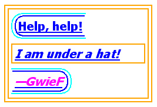

The properties defined in the following sections affect the visual presentation of characters, spaces, words, and paragraphs.
| Value: | <length> | <percentage> | inherit |
| Initial: | 0 |
| Applies to: | block containers |
| Inherited: | yes |
| Percentages: | refer to width of containing block |
| Media: | visual |
| Computed value: | the percentage as specified or the absolute length |
This property specifies the indentation of the first line of text in a block container. More precisely, it specifies the indentation of the first box that flows into the block's first line box. The box is indented with respect to the left (or right, for right-to-left layout) edge of the line box. User agents must render this indentation as blank space.
'text-indent' only affects a line if it is the first formatted line of an element. For example, the first line of an anonymous block box is only affected if it is the first child of its parent element.
Values have the following meanings:
The value of 'text-indent' may be negative, but there may be implementation-specific limits. If the value of 'text-indent' is either negative or exceeds the width of the block, that first box, described above, can overflow the block. The value of 'overflow' will affect whether such text that overflows the block is visible.
The following example causes a '3em' text indent.
p { text-indent: 3em }
Note: Since the 'text-indent' property inherits, when specified on
a block element, it will affect descendant inline-block elements.
For this reason, it is often wise to specify 'text-indent: 0'
on elements that are specified 'display:inline-block'.
This property describes how inline-level content of a block container is aligned. Values have the following meanings:
A block of text is a stack of line boxes. In the case of 'left', 'right' and 'center', this property specifies how the inline-level boxes within each line box align with respect to the line box's left and right sides; alignment is not with respect to the viewport. In the case of 'justify', this property specifies that the inline-level boxes are to be made flush with both sides of the line box if possible, by expanding or contracting the contents of inline boxes, else aligned as for the initial value. (See also 'letter-spacing' and 'word-spacing'.)
If an element has a computed value for 'white-space' of 'pre' or 'pre-wrap', then neither the glyphs of that element's text content nor its white space may be altered for the purpose of justification.
Note: CSS may add a way to justify text with 'white-space: pre-wrap' in the future.
In this example, note that since 'text-align' is inherited, all block-level elements inside DIV elements with a class name of 'important' will have their inline content centered.
div.important { text-align: center }
Note. The actual justification algorithm used depends on the user-agent and the language/script of the text.
Conforming user agents may interpret the value 'justify' as 'left' or 'right', depending on whether the element's default writing direction is left-to-right or right-to-left, respectively.
This property describes decorations that are added to the text of an element using the element's color. When specified on or propagated to an inline element, it affects all the boxes generated by that element, and is further propagated to any in-flow block-level boxes that split the inline (see section 9.2.1.1). But, in CSS 2, it is undefined whether the decoration propagates into block-level tables. For block containers that establish an inline formatting context, the decorations are propagated to an anonymous inline element that wraps all the in-flow inline-level children of the block container. For all other elements it is propagated to any in-flow children. Note that text decorations are not propagated to floating and absolutely positioned descendants, nor to the contents of atomic inline-level descendants such as inline blocks and inline tables.
Underlines, overlines, and line-throughs are applied only to text (including white space, letter spacing, and word spacing): margins, borders, and padding are skipped. User agents must not render these text decorations on content that is not text. For example, images and inline blocks must not be underlined.
Note. If an element E has both 'visibility: hidden' and 'text-decoration: underline', the underline is invisible (although any decoration of E's parent is visible.) However, CSS 2 does not specify if the underline is visible or invisible in E's children:
<span style="visibility: hidden; text-decoration: underline"> <span style="visibility: visible"> underlined or not? </span> </span>
This is expected to be specified in level 3 of CSS.
The 'text-decoration' property on descendant elements cannot have any effect on the decoration of the ancestor. In determining the position of and thickness of text decoration lines, user agents may consider the font sizes of and dominant baselines of descendants, but must use the same baseline and thickness on each line. Relatively positioning a descendant moves all text decorations affecting it along with the descendant's text; it does not affect calculation of the decoration's initial position on that line.
Values have the following meanings:
The color(s) required for the text decoration must be derived from the 'color' property value of the element on which 'text-decoration' is set. The color of decorations must remain the same even if descendant elements have different 'color' values.
Some user agents have implemented text-decoration by propagating the decoration to the descendant elements as opposed to preserving a constant thickness and line position as described above. This was arguably allowed by the looser wording in CSS2 (1998). SVG1, CSS1-only, and CSS2 (1998)-only user agents may implement the older model and still claim conformance to this part of CSS 2. (This does not apply to UAs developed after this specification was released.)
In the following example for HTML, the text content of all A elements acting as hyperlinks (whether visited or not) will be underlined:
a:visited,a:link { text-decoration: underline }
In the following style sheet and document fragment:
blockquote { text-decoration: underline; color: blue; }
em { display: block; }
cite { color: fuchsia; }
<blockquote>
<p>
<span>
Help, help!
<em> I am under a hat! </em>
<cite> —GwieF </cite>
</span>
</p>
</blockquote>
...the underlining for the blockquote element is propagated to an
anonymous inline element that surrounds the span element, causing
the text "Help, help!" to be blue, with the blue underlining from
the anonymous inline underneath it, the color being taken from the
blockquote element. The <em>text</em>
in the em block is also underlined,
as it is in an in-flow block to which the underline is propagated. The final line of text is fuchsia, but the underline
underneath it is still the blue underline from the anonymous inline
element.

This diagram shows the boxes involved in the example above. The rounded aqua line represents the anonymous inline element wrapping the inline contents of the paragraph element, the rounded blue line represents the span element, and the orange lines represent the blocks.
This property specifies spacing behavior between text characters. Values have the following meanings:
Character spacing algorithms are user agent-dependent.
In this example, the space between characters in BLOCKQUOTE elements is increased by '0.1em'.
blockquote { letter-spacing: 0.1em }
In the following example, the user agent is not permitted to alter inter-character space:
blockquote { letter-spacing: 0cm } /* Same as '0' */
When the resultant space between two characters is not the same as the default space, user agents should not use ligatures.
This property specifies spacing behavior between words. Values have the following meanings:
Word spacing algorithms are user agent-dependent. Word spacing is also influenced by justification (see the 'text-align' property). Word spacing affects each space (U+0020) and non-breaking space (U+00A0), left in the text after the white space processing rules have been applied. The effect of the property on other word-separator characters is undefined. However general punctuation, characters with zero advance width (such as the zero with space U+200B) and fixed-width spaces (such as U+3000 and U+2000 through U+200A) are not affected.
In this example, the word-spacing between each word in H1 elements is increased by '1em'.
h1 { word-spacing: 1em }
This property controls capitalization effects of an element's text. Values have the following meanings:
The actual transformation in each case is written language dependent. See BCP 47 ([BCP47]) for ways to find the language of an element.
Only characters belonging to "bicameral scripts" [UNICODE] are affected.
In this example, all text in an H1 element is transformed to uppercase text.
h1 { text-transform: uppercase }
This property declares how white space inside the element is handled. Values have the following meanings:
Newlines in the source can be represented by a carriage return (U+000D), a linefeed (U+000A) or both (U+000D U+000A) or by some other mechanism that identifies the beginning and end of document segments, such as the SGML RECORD-START and RECORD-END tokens. The CSS 'white-space' processing model assumes all newlines have been normalized to line feeds. UAs that recognize other newline representations must apply the white space processing rules as if this normalization has taken place. If no newline rules are specified for the document language, each carriage return (U+000D) and CRLF sequence (U+000D U+000A) in the document text is treated as single line feed character. This default normalization rule also applies to generated content.
UAs must recognize line feeds (U+000A) as newline characters. UAs may additionally treat other forced break characters as newline characters per UAX14.
The following examples show what white space behavior is expected from the PRE and P elements and the "nowrap" attribute in HTML.
pre { white-space: pre }
p { white-space: normal }
td[nowrap] { white-space: nowrap }
In addition, the effect of an HTML PRE element with the non-standard "wrap" attribute is demonstrated by the following example:
pre[wrap] { white-space: pre-wrap }
For each inline element (including anonymous inline elements), the following steps are performed, treating bidi formatting characters as if they were not there:
Then, the block container's inlines are laid out. Inlines are laid out, taking bidi reordering into account, and wrapping as specified by the 'white-space' property. When wrapping, line breaking opportunities are determined based on the text prior to the white space collapsing steps above.
As each line is laid out,
Floated and absolutely-positioned elements do not introduce a line breaking opportunity.
Note. CSS 2 does not fully define where line breaking opportunities occur.
Given the following markup fragment, taking special note of spaces (with varied backgrounds and borders for emphasis and identification):
<ltr>A <rtl> B </rtl> C</ltr>
...where the <ltr> element represents a left-to-right embedding and
the <rtl> element represents a right-to-left embedding, and
assuming that the 'white-space' property is set to 'normal', the
above processing model would result in the following:
This would leave two spaces, one after the A in the left-to-right embedding level, and one after the B in the right-to-left embedding level. This is then rendered according to the Unicode bidirectional algorithm, with the end result being:
A BC
Note that there are two spaces between A and B, and none between B and C. This can sometimes be avoided by using the natural bidirectionality of characters instead of explicit embedding levels. Also, it is good to avoid spaces immediately inside start and end tags, as these tend to do weird things when dealing with white space collapsing.
Control characters other than U+0009 (tab), U+000A (line feed), U+0020 (space), and U+202x (bidi formatting characters) are treated as characters to render in the same way as any normal character.
Combining characters should be treated as part of the character
with which they are supposed to combine. For example, :first-letter
styles the entire glyph if you have content like
"o<span>̈</span>"; it does not just
match the base character.